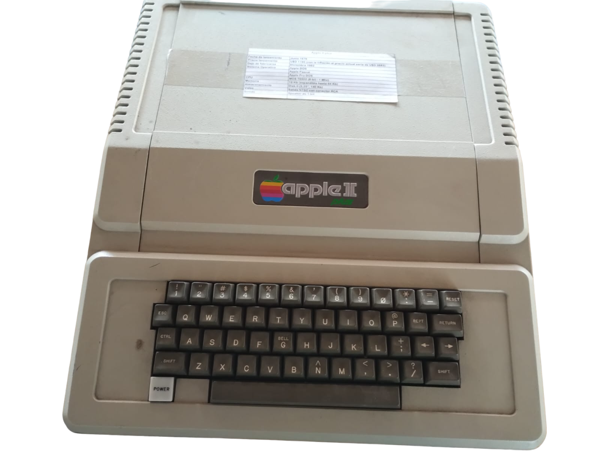
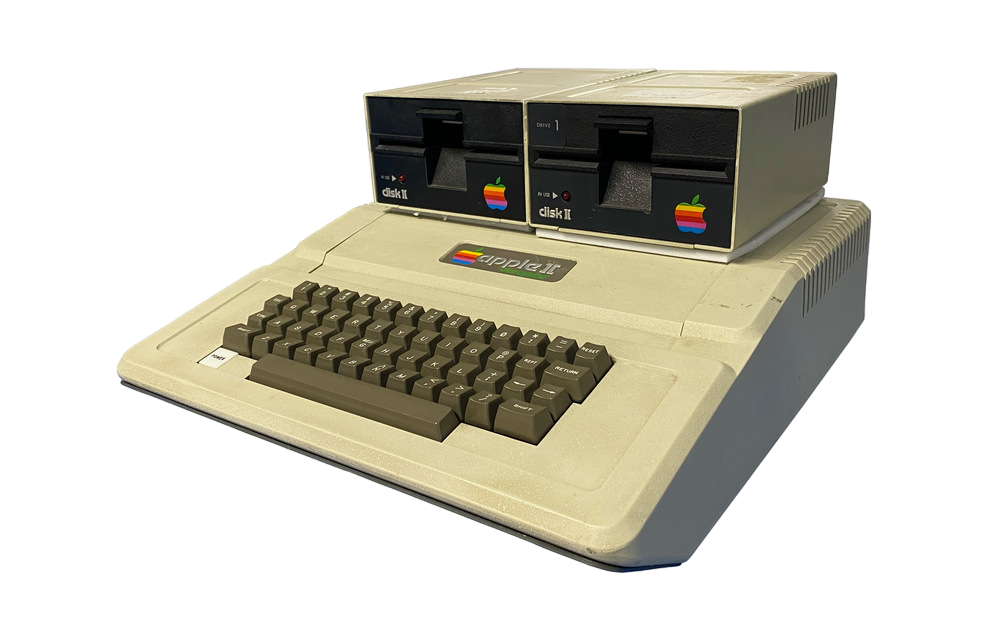
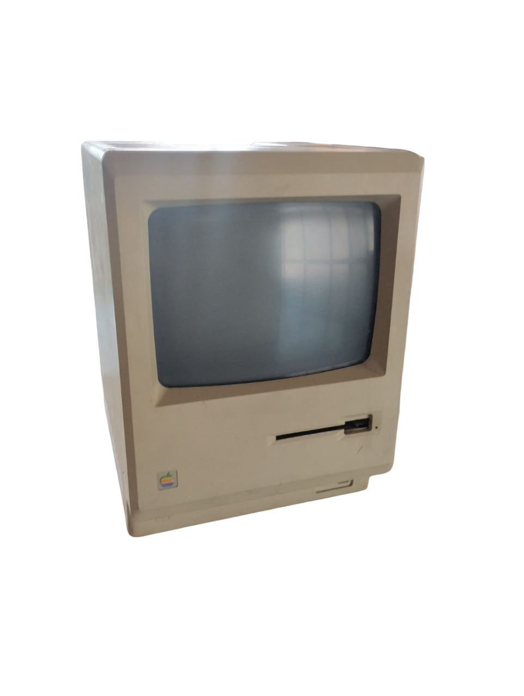
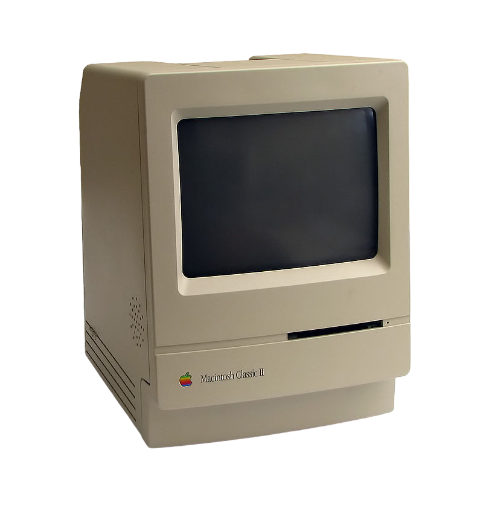
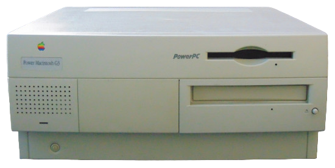
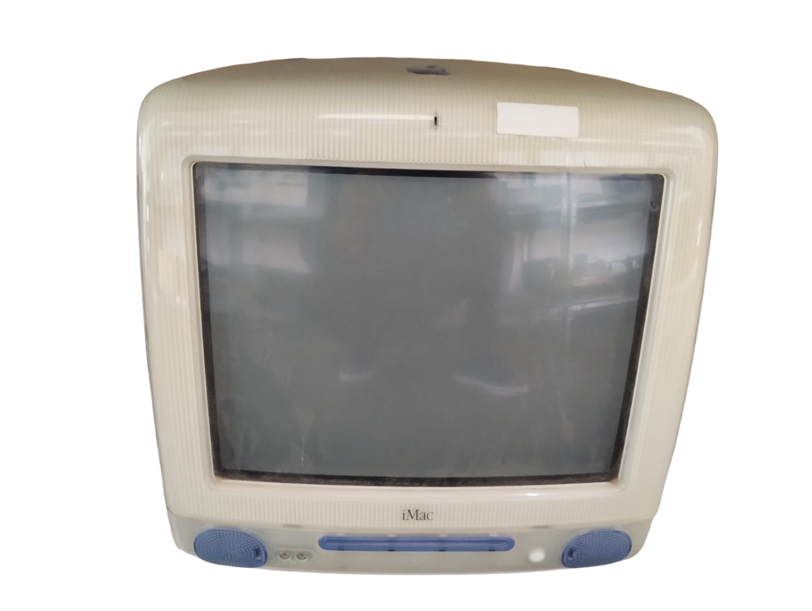
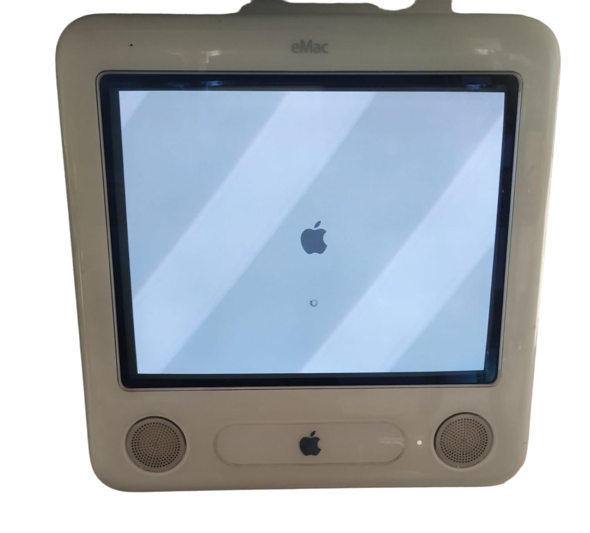

Apple 2 Plus


Lanzamiento: 16 de abril de 1979
Una versión mejorada del icónico Apple II, uno de los primeros microordenadores de éxito comercial. Este modelo introdujo varias mejoras significativas, incluyendo una mayor capacidad de memoria, que podía ampliarse hasta 64 KB, y un sistema de gestión de caracteres mejorado. El Apple II Plus también ofrecía compatibilidad con una amplia gama de software, lo que lo convirtió en una opción popular tanto para usuarios domésticos como para escuelas y empresas. Su diseño modular y la facilidad de uso contribuyeron a consolidar la reputación de Apple como innovador en la industria de la computación personal.
Macintosh 128k

Lanzamiento: 24 de enero de 1984
El 24 de enero de 1984 Steve Jobs realizó la que sería una de las Keynote más recordadas de todos los tiempos: la presentación del primer Mac. Tras intensos años de desarrollo, cientos de correcciones y esa obsesión por alcanzar la perfección, este pequeño ordenador personal revolucionó el concepto de informática en aquella época. Incluía una interfaz gráfica orientada totalmente al usuario y un catálogo tipográfico inédito hasta el momento que consiguió ese efecto wow tan buscado desde entonces. ¡Por primera vez un ordenador tenía ratón! Hasta entonces, los ordenadores se manejaban a través de comandos escritos en el teclado. El primer Macintosh era un ordenador que podía transportarse sin problema de mesa en mesa, fabricado con un hardware innovador por el rendimiento que ofrecía y la complejidad que suponía integrarlo en una caja tan pequeña. Sus primeras características técnicas eran un procesador Motorola 68000 a 8 MHz y una RAM de 128 KB.
Macintosh classic ||

Lanzamiento: 21 de octubre de 1991
El Classic era una adaptación del diseño industrial del Macintosh 128K de Jerry Manock y Terry Oyama, al igual que el anterior Macintosh SE. Apple lanzó dos versiones, que iban de los 1000 a los 1500 dólares. Las reacciones de los críticos fueron mixtas; la mayoría criticaba el desempeño de su lento procesador y la falta de slots de expansión. Todos coincidían en que el Classic solo era adecuado para procesar textos, hojas de cálculo y bases de datos. Sin embargo, su bajo precio y la disponibilidad de software educativo permitieron que se hiciera popular en el sector de la educación. Se vendió junto al más potente Macintosh Classic II durante 1991 hasta su discontinuación al año siguiente.
Power Macintosh G3

Lanzamiento: 10 de noviembre de 1997
La Power Macintosh G3, más tarde conocida como Power Mac G3, fue una serie de computadoras Macintosh de Apple que se basaban en el procesador PowerPC G3 (PPC750). Este modelo dio un gran salto adelante con la introducción de una gran caché de nivel 2 en la parte trasera, que reducía los cuellos de botella de datos y permitía un uso muy eficiente de la velocidad de su bus por parte del ordenador. Por ello, en aquel momento se consideraba que los Power Mac G3 eran más rápidos que los PC Intel de velocidad de CPU similar. El Power Mac G3 estaba pensado originalmente para ser una serie de gama media, entre los modelos Performa/LC de gama baja y el Power Macintosh 9600 de gama alta. Durante el desarrollo, rápidamente se hizo evidente que el G3 era una máquina mucho más rápida que los Mac basados en PowerPC 604, por lo que el Power Mac G3 se convirtió en el buque insignia.
Imac G3

Lanzamiento: 15 de agosto de 1998
El iMac G3 fue el primer modelo de la línea iMac de computadoras personales fabricadas por Apple. Basado en la arquitectura Columbus, es una computadora personal todo en uno que combina el monitor y la computadora en un solo gabinete. Venía en diferentes colores y se acompañaba de un teclado y un mouse.
Emac

Lanzamiento: 29 de abril de 2002
El eMac es una alternativa de menor costo al iMac de segunda generación con G4 de reciente lanzamiento (conocido durante su vida útil como "el nuevo iMac" y como iMac G4 después de su descontinuación). La pantalla LCD del nuevo iMac lo hizo algo caro en comparación con su predecesor G3 que lucía una pantalla CRT más barata, por lo que el eMac se consideró la actualización más asequible para aquellos que buscan más potencia de procesamiento que el primer iMac. Originalmente, el eMac estaba destinado exclusivamente a compradores de educación, pero la demanda fue lo suficientemente alta como para estar disponible para la venta minorista general un mes después.